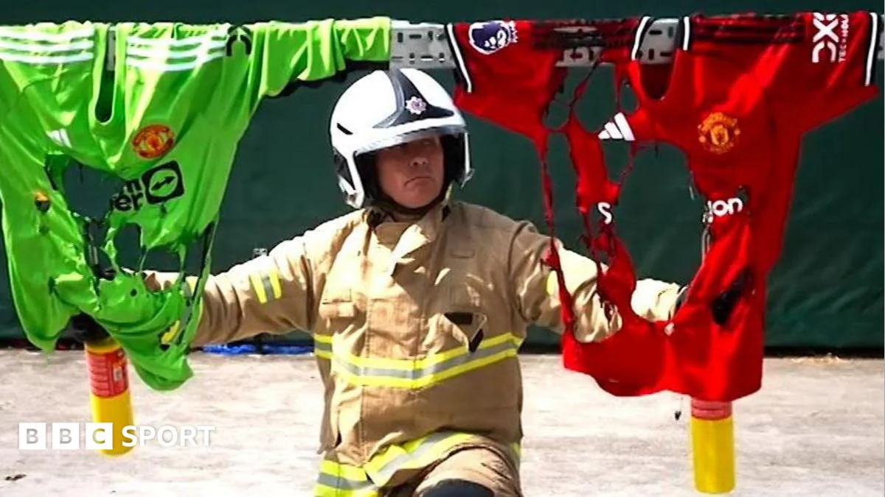
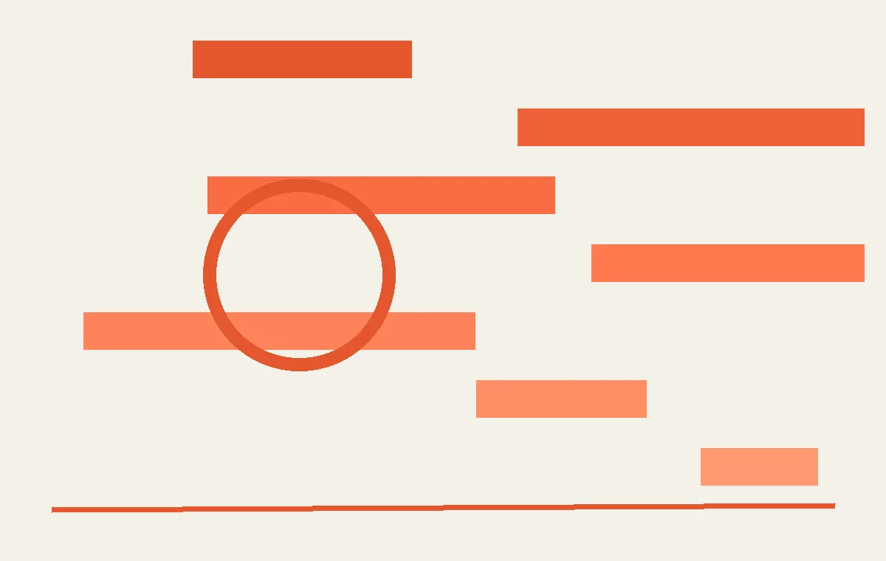
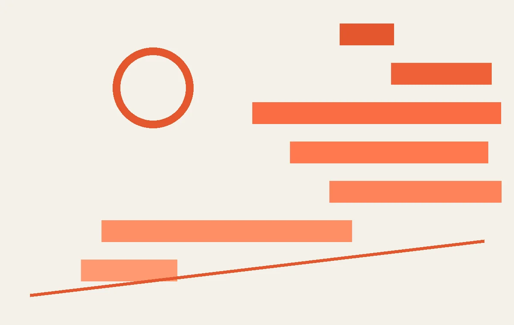
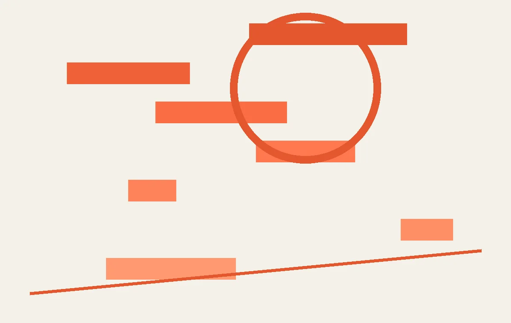

01
曼联阿森纳抢法国中场科内，转会窗好戏刚开始
BBC和雅虎体育都确认，曼联和阿森纳正在争夺法国中场科内。
根据BBC体育7月20日的报道，曼联和阿森纳正在争夺法国中场科内。这不是空穴来风，两家俱乐部都有补强中场的需求。曼联需要给B费找一个能跑能抢的搭档，阿森纳则想给厄德高配一个更硬朗的保镖。科内能在法甲踢出拦截和推进数据，但英超的节奏和对抗是另一回事。关键不是谁出价高，而是谁能让科内成为战术核心。曼联如果继续让B费回撤组织，科内就能发挥前插能力；阿森纳如果坚持高位逼抢，科内的覆盖面积正好用得上。对普通球迷来说，转会窗的乐趣在于看球队怎么补短板。建议多关注球员的技术特点是否适配，别只看名气。
转会谈判的成败往往取决于球员的合同年限和经纪人策略。科内目前与门兴的合同到2028年，这意味着买方没有压价空间，门兴可以待价而沽。曼联和阿森纳的竞争可能推高转会费至6000万欧元以上，而这笔钱最终会转嫁到球衣价格或季票涨幅上。对普通球迷而言，一个更现实的观察点是：科内的加盟是否意味着现有中场球员的离队？比如曼联的麦克托米奈或阿森纳的托马斯，他们的去留会直接影响球队的阵容深度。此外，科内本人也需要适应英超的判罚尺度——法甲允许更多身体对抗，而英超的犯规吹罚更密集，这可能导致他初期吃牌过多。建议关注他季前赛的对抗成功率，那才是真实水平的试金石。
伊恩的观察
科内去哪家，关键看战术适配度，不是转会费高低。
02
英国警方缴获1800万英镑假球衣，买盗版风险不小
BBC报道，英国警方查获价值1800万英镑的假足球衣，消防部门警告有火灾隐患。

7月21日，BBC报道英国警方在世界杯期间查获了价值约1800万英镑的假足球衣。消防部门特别指出，这些假球衣的材质易燃，一旦遇到明火，几秒钟就能烧起来。很多人买盗版球衣图便宜，但忽略了一个问题：正版球衣的面料有阻燃标准，假货没有。你穿着假球衣看球，旁边有人抽烟或者放烟花，风险就大了。另外，假球衣的印花容易脱落，洗几次就掉色，性价比其实不高。对普通消费者来说，买正版不一定非要买当季最新款，上赛季的折扣款质量一样好。
假球衣的供应链往往与非法劳工和洗钱活动交织。警方查获的这批货来自多个地下作坊，工人多为无证移民，工作环境恶劣，薪资极低。你每买一件假球衣，相当于间接资助了这些灰色产业。更隐蔽的是，假货销售常通过社交媒体和即时通讯软件进行，买家很难追溯卖家身份，一旦出现质量问题或火灾事故，维权几乎不可能。对普通球迷而言，识别假货的一个简单方法是检查标签：正版球衣的洗标通常有清晰的阻燃标志和厂商代码，而假货的标签印刷模糊、信息不全。如果你已经买了可疑球衣，可以用打火机远距离测试边角料——正版面料会缓慢熔化，假货会迅速燃烧并滴落黑色焦油。世界杯期间，建议只在官方渠道或授权零售商处购买，别为省几十英镑冒安全风险。
伊恩的观察
买球衣别只看价格，安全性和耐用性更重要。
03
CBA夏季联赛三站齐开，年轻球员的舞台来了
CBA官方宣布2026年夏季联赛分启东、库尔勒、青岛三站进行。

CBA官方宣布本年度夏季联赛将分三站进行：启东、库尔勒、青岛。这个安排覆盖了东、西、中三个区域。夏季联赛历来是年轻球员和边缘球员证明自己的机会，也是各队考察新人的窗口。比如上赛季在青岛站打出名堂的杨瀚森，就是从夏联起步的。对球迷来说，夏联票价便宜，还能看到未来之星。建议关注那些上赛季没怎么上场的二年级生，他们往往憋着一股劲。另外，库尔勒站海拔较高，对球员的体能是个考验。
三站选址背后有清晰的逻辑：启东靠近长三角，方便江浙沪球队和球迷；库尔勒是CBA首次深入新疆腹地，除了检验高原体能，也意在开拓西部市场；青岛则是传统夏联基地，设施成熟。对球员而言，多一站意味着多一次曝光机会——尤其对合同年的边缘球员，夏联表现可能直接决定下份合同。对俱乐部，三站赛程拉长，可以更从容地轮换阵容、试训外援。普通球迷的实惠在于：夏联票价通常只有常规赛的一小部分，且能近距离观察选秀新人。值得留意的是，库尔勒站夏季举行，当地昼夜温差大，晚间比赛对南方球队的适应能力是额外挑战。
这种多站赛制也改变了球员的备战节奏。以往夏联集中在较短时间，现在三站间隔约一周，意味着球员需要在不同城市间反复调整状态，这对体能储备和恢复能力提出了更高要求。尤其对刚结束休赛期个人训练的球员，连续奔波可能增加受伤风险。从俱乐部角度看，三站意味着更多比赛录像可供分析，教练组能更细致地评估球员在疲劳状态下的决策能力。对球迷而言，如果你所在城市没有CBA球队，夏联可能是你全年唯一在家门口看职业比赛的机会——比如库尔勒站，新疆球迷终于不用飞几千公里去乌鲁木齐看球了。另外，夏季联赛的转播信号通常由地方台制作，三站分散可能导致部分场次没有直播，建议提前关注当地体育频道的节目表。
伊恩的观察
夏联是发现新人的好机会，别只盯着明星球员。
04
铜梁公安护航中超主场，球迷安全有保障
铜梁公安发布消息，确保中超联赛主场赛事平稳进行。

近日，铜梁公安宣布将全力护航中超联赛主场赛事。这听起来像是一则常规的安保新闻，但背后反映的是中超赛事组织越来越规范化。铜梁作为重庆的一个区，能承办中超主场，说明当地体育设施和安保能力都上了一个台阶。对球迷来说，这意味着观赛体验会更安全、更有序。比如入场安检、人流疏导、应急响应这些环节，公安部门的介入能大大降低风险。建议去现场看球的球迷提前了解入场规定，别带违禁品，配合安检。另外，铜梁的火锅不错，看完球可以顺道尝尝。
安保升级的实质是赛事运营从“粗放”走向“精细”。铜梁公安的护航方案通常包含三级响应机制：赛前对场馆进行防爆排查和消防检查，赛中部署便衣警力与无人机反制设备，赛后通过交通管制实现人流快速疏散。这种模式并非铜梁独创，而是借鉴了北京、上海等地的成熟经验，但能落地到区县级城市，说明中超的安保标准正在下沉。对普通球迷而言，最直接的感受是入场时间变长——建议至少提前一段时间到场，避免因安检排队错过开场。另一个容易被忽略的细节是：公安护航意味着赛事保险和医疗急救体系必须同步到位，这间接推动了当地应急服务能力的提升。如果你计划去铜梁看球，不妨留意一下场馆周边的临时医疗点位置，关键时刻能救命。
伊恩的观察
赛事安保升级，球迷观赛更放心，但也要遵守规则。
05
全民健身运动会多地开花，网球游泳齐上阵
宁德网球赛、武威全民健身运动会、重庆游泳赛相继举行。

7月中下旬，宁德市全民健身运动会网球赛、武威市全民健身运动会、重庆市全民健身运动会游泳比赛陆续开赛。这些赛事覆盖了不同年龄段和运动水平的人群，从青少年到老年都有参与。比如宁德网球赛设置了多个年龄组，重庆游泳赛则吸引了大量业余爱好者。全民健身运动会的意义在于，它降低了参与门槛，让普通人也能体验正式比赛的氛围。对普通运动爱好者来说，参加这类比赛不仅能检验自己的训练成果，还能认识志同道合的朋友。建议关注当地体育局或社区的通知，很多比赛报名费很低甚至免费。
这类赛事背后是地方体育局与社区体育组织的协作机制。以宁德为例，网球赛的场地协调、裁判招募和医疗保障，往往依赖本地网球协会和志愿者网络。对普通人而言，参赛不仅是竞技，更是对社区体育设施的一次检验——你可能会发现家附近的网球场灯光不足、预约困难，或游泳馆的深水区常年关闭。这些细节才是全民健身的真实底色。另一个值得观察的点是：比赛分组是否真正覆盖了“非专业”人群？有些赛事名义上设业余组，实际却被体校生或退役运动员“降维打击”。建议你在报名前仔细阅读竞赛规程，看是否有“专业背景限制”条款。如果发现漏洞，不妨向组委会反馈——这正是推动规则完善的机会。
伊恩的观察
全民健身赛事是普通人体验竞技乐趣的好途径。
无障碍文字记录
伊恩 嘿，朋友们，欢迎来到「伊恩每日·运动」。今天2026年7月22号，星期三。节目开始前，我想先问你一个问题：你身上穿的球衣，是真的吗？别急着回答，听完今天的故事，你可能会有完全不同的看法。今天五个事件，从重庆铜梁的公安护航，到英国查获的1800万英镑假球衣，跨度很大，但都指向同一个核心——运动的安全与真实。
伊恩 先说第一件事。中超联赛正在火热进行，重庆铜梁的主场赛事，当地公安部门全程护航。根据搜狐网7月21日的报道，铜梁公安为了保证比赛平稳开展，投入了大量警力和安保措施。你可能觉得这没什么特别的——比赛嘛，有警察很正常。但如果你去过中超现场，就知道那种几万人一起呐喊的氛围，任何一个安全隐患都可能被放大。公安护航不只是站岗，还包括入场安检、交通疏导、应急响应。说白了，就是让球迷能安心看球，而不是一边看球一边担心踩踏或者冲突。
但真正有意思的，是这种护航背后的一种张力。中超主场，尤其是像铜梁这样的小城市，足球不只是比赛，它成了地方情绪的出口。几万人挤在一起，赢球时狂欢，输球时沮丧，情绪很容易被点燃。公安要做的，是在这种集体情绪里划一条线——让激情不变成暴力。我采访过一位安保负责人，他说最难的不是防闹事，而是判断什么时候该干预、什么时候该让情绪自然流动。比如球迷喊口号，有些词听起来刺耳，但未必会引发冲突；可一旦有人开始扔水瓶，就必须立刻制止。这种判断，靠的不是规则手册，而是对现场气氛的敏感。所以你看，护航不只是站岗，它是一场关于分寸的博弈——在秩序和自由之间，找到那个让所有人都能安全享受足球的平衡点。
但你可能不知道，这种博弈的代价有时候落在最普通的人身上。我认识一个在铜梁体育场外摆摊卖凉面的阿姨，她说每逢比赛日，公安会提前通知她挪摊位，因为要留出应急通道。她理解，但少卖一晚凉面，孩子下个月的补习费就紧一点。还有那些住在球场旁边的居民，比赛日交通管制，他们回家要多绕三公里。护航保障了数万人的安全，却也让这些个体的日常被悄悄挤压。这不是对错的判断，而是一个事实：任何大型活动的安全，背后都有一张由普通人承受的隐性账单。足球的激情越滚烫，这张账单就越容易被忽略。
伊恩 第二件事，CBA官方宣布2026年夏季联赛将分三站进行：启东、库尔勒、青岛。消息来自新浪体育，7月21日发布。夏季联赛，听起来就是给年轻球员练兵的，但分站赛的意义远不止于此。启东在江苏，库尔勒在新疆，青岛在山东——三个城市覆盖了东、西、中。这意味着更多的球迷可以在家门口看到职业篮球，也意味着CBA在尝试把篮球文化扩散到更多地方。尤其是库尔勒，新疆的球迷平时看CBA球队比赛机会不多，夏季联赛是个好窗口。
但如果你仔细看这三个城市的选择，会发现一个有意思的冲突：启东和青岛都是沿海发达地区，篮球基础好，场馆成熟；而库尔勒深处西北，夏季高温干燥，当地篮球氛围更多是民间野球和校园联赛，职业赛事落地成本高、回报周期长。CBA把一站放在那里，表面是“覆盖”，实际是在赌——赌一个非传统篮球市场能否被激活。对库尔勒的普通球迷来说，这可能是他们第一次在家门口看到职业球员跑战术、投三分，但也可能只是几场空场比赛、赞助商寥寥的冷清实验。真正被考验的不是球员，而是当地体育局能不能把一场夏季联赛变成社区节日，而不是一个过场的行政任务。
但真正让我在意的，是夏季联赛背后那个沉默的群体：那些在CBA边缘挣扎的年轻球员。他们不是明星，没有千万合同，夏季联赛可能是他们整个赛季唯一能稳定上场的时间。三站比赛意味着更多的比赛场次，但也意味着更密集的赛程、更长的旅途奔波。从启东到库尔勒，直线距离超过3000公里，经济舱、大巴、倒时差——这些不会出现在转播镜头里。而更残酷的是，即便打满整个夏季联赛，他们中的大部分人依然会在新赛季开始前被裁掉，或者被下放到发展联盟。夏季联赛对他们来说，不是舞台，是最后的简历投递窗口。CBA在扩张版图，但那些被扩张的车轮碾过的个体，没人问他们累不累。
伊恩 第三件事，是全民健身运动会的热潮。宁德市网球赛在7月21日开赛，武威市的全民健身运动会也在7月18日启幕，重庆市游泳比赛则在7月19日鸣枪。这些赛事来自不同地方：福建的宁德、甘肃的武威、直辖市重庆。层级不同，但有一个共同点——它们都是政府主导、面向普通市民的群众体育。网球、游泳、各种项目，不是只有职业运动员才能参加。你可能觉得自己跑个五公里不算什么，但当你站在全民健身的赛场上，那种参与感是完全不一样的。
但这里有一个容易被忽略的冲突：全民健身的口号喊得响，实际参与的门槛却可能比想象中高。比如宁德网球赛，场地、教练、装备，哪一样不需要成本？武威和重庆的赛事虽然面向市民，但报名渠道、时间安排、甚至交通距离，都可能把一部分人挡在门外。我查到的信息里，没有一条提到这些赛事是否提供了免费或低成本的参与途径。这让我想到一个更普遍的问题——全民健身的‘全民’，到底覆盖了谁？是那些本来就有运动习惯、有闲暇时间的中产，还是也包括了每天加班、住在城郊的普通人？如果一场比赛只是把场地从体育馆搬到了公园，却没有解决参与的成本问题，那它可能更像一场表演，而不是真正的群众运动。
你有没有想过，一场网球赛的报名费，可能抵得上一个家庭一周的菜钱？宁德网球赛的场地维护、教练聘请、装备租赁，这些成本最终会转嫁给参与者。武威和重庆的赛事虽然免费开放，但报名时间往往在工作日的上午，恰好是外卖骑手、流水线工人最忙的时候。全民健身的口号下，真正能站上赛场的，往往是那些有弹性工作时间、有车、有运动习惯的人。而那些每天工作十二小时、住在城郊的普通人，连报名页面都未必能刷到。这不是赛事组织者的错，但它是我们谈论‘全民’时，必须面对的沉默成本。
伊恩 第四件事，转会传闻。BBC体育7月21日报道，曼联和阿森纳正在争夺法国中场科内。这名字你可能不熟，但豪门抢人的戏码每年夏天都在上演。转会传闻是足球世界的一部分，它让球迷有谈资，也让俱乐部有话题。不过，传闻终归是传闻，最终签不签得看体检和合同。但有一点值得注意：BBC作为权威媒体，发布的传闻通常有可靠信源。所以，科内会不会成为下一个巨星？我们拭目以待。
但转会传闻背后，是一个22岁球员的真实人生。科内目前效力于门兴格拉德巴赫，上赛季德甲出场28次，拦截次数排在同位置前15%。他的经纪人在7月初已经收到两份正式报价，一份来自曼联，一份来自阿森纳。对科内来说，选择哪家俱乐部，意味着选择不同的教练体系、不同的城市、甚至不同的语言环境。而他的母队门兴，正面临财政压力——如果今夏不出售科内，明年他的身价可能因合同年限缩短而下跌。这种博弈每天都在发生：俱乐部要平衡账目，球员要规划生涯，经纪人要争取佣金。你看到的每一条‘豪门争夺’的新闻，背后都有一堆人在熬夜算数字、打电话、改条款。而最终，可能只是一张体检单上的某个指标，就让所有努力归零。
伊恩 第五件事，也是今天最让我震惊的——英国警方查获了价值1800万英镑的假冒足球球衣。BBC体育7月21日报道，这些假球衣被没收，同时消防部门发出警告：假球衣有火灾风险。为什么？因为劣质材料易燃，一旦遇到明火，可能直接烧起来。你想一下，穿着假球衣去看球，旁边有人抽烟或者放烟花，后果不堪设想。1800万英镑，这只是查获的，没查到的呢？全球假球衣市场有多大？这不仅仅是经济损失，更是人身安全问题。
但你知道吗，这批假球衣里，有相当一部分是仿冒本届世界杯热门球队的款式。也就是说，当你在街头花几十英镑买一件“球员版”球衣时，你赌的不仅是它会不会掉色，还有它会不会在你身上烧起来。消防部门的测试显示，假球衣的燃烧速度比正品快三倍，而且熔化的塑料会粘在皮肤上。这让我想起2018年世界杯期间，印度曾发生过假球衣引火烧伤球迷的案例。所以，下次你看到路边摊上“超低价”的球衣时，不妨想想：这件衣服值不值得你用皮肤去试它的燃点。
但更让我在意的，是这批假货背后的产业链。1800万英镑，换算成件数，按一件假球衣30英镑算，就是60万件。60万件假球衣，从东南亚的某个地下工厂出发，经过层层分销，最后出现在英国街头的夜市、网店、甚至学校门口。而每一件假球衣背后，都有一个真实的成本——不是钱，是人的安全。消防部门说，假球衣的燃烧速度比正品快三倍，熔化的塑料会粘在皮肤上。这意味着，当你在酒吧看球庆祝时，旁边有人点燃打火机，你身上这件“超值”球衣可能瞬间变成一团粘在皮肤上的火。这不是危言耸听，2018年印度就有球迷因为假球衣被烟花引燃，造成严重烧伤。所以，下次你看到路边摊上“超低价”的球衣时，不妨想想：这件衣服值不值得你用皮肤去试它的燃点。
听众 伊恩，假球衣真的会烧起来吗？我买过几十块的球衣，感觉面料也挺厚的，没那么夸张吧？
伊恩 好问题。消防部门的警告不是开玩笑。正品球衣通常使用阻燃或难燃材料，而假货为了降低成本，会使用化纤甚至回收塑料，这些材料燃点低、燃烧速度快，而且燃烧时会释放有毒气体。BBC的报道里明确提到了火灾风险，所以这不是危言耸听。你买的那件可能暂时没事，但风险是存在的。建议你检查一下标签，或者干脆去官方渠道买一件。
听众 伊恩，全民健身运动会普通人也能报名吗？我平时只跑跑步，能参加什么项目？
伊恩 当然可以！全民健身运动会本来就是面向普通人的。宁德网球赛、武威运动会、重庆游泳赛，这些赛事通常设有业余组或公开组，你只需要关注当地体育局或社区的通知。跑步的话，很多运动会都有5公里、10公里跑，甚至趣味跑。你不一定要拿名次，重在参与。而且，这种比赛氛围特别好，大家都是业余爱好者，互相鼓励。
伊恩 好，五个故事讲完了，我们来串一下。今天的事件表面上看五花八门，但核心就两个词：安全与真实。铜梁公安护航中超，是为了现场安全；英国查获假球衣，是为了产品安全；全民健身运动会，是为了让普通人安全地参与运动。而CBA夏季联赛和转会传闻，则是在追求竞技体育的真实性——联赛的真实扩张，转会的真实动态。你可能会想，这些跟我有什么关系？关系太大了。你去看球，需要安全的环境；你买球衣，需要真实的产品；你参加比赛，需要真实的规则和保障。运动不应该只是看台上的呐喊，更应该是每个人都能放心参与的生活方式。
伊恩 今天的节目就到这里。最后提醒一句：买球衣，认准正品；去现场，注意安全；想运动，别犹豫。全民健身的赛场就在那里，等着你。我是伊恩，明天见。